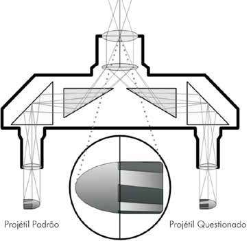
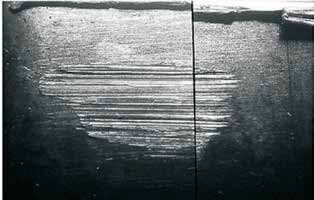
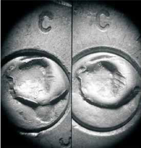
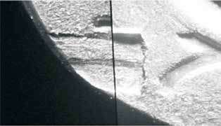
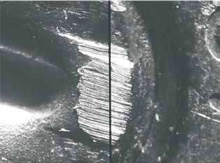

Tal como para armas de fogo, cartuchos de munição e elementos de munição apreendidos podem passar por exames de identificação direta, com descrição de suas características e procedência, além de teste de eficiência para os cartuchos recebidos íntegros ou de confronto balístico para os elementos de munição recebidos disparados.
A caracterização de uma munição ou de elementos de munição é realizada para determinar suas características gerais e peculiaridades. A descrição deve iniciar-se pelas características mais genéricas e, paulatinamente, ir tornando-se mais específica. Como é recorrente a apreensão de grande quantidade de cartuchos íntegros ou estojos com as mesmas características genéricas e específicas, é comum que fotografias da estampa da base e de número de lote (gravada na lateral e gola do estojo quando vendidas para órgãos de segurança) e a descrição para caracterização serem realizadas por grupos de mesmo calibre nominal, fabricante e tipo de projétil. No Anexo III, encontram-se exemplos de descrições de cartuchos de munição recebidos íntegros.
Na Polícia Federal os testes de eficiência em munições devem ser efetuados seguindo as instruções contidas INSTRUÇÃO TÉCNICA N. 15/2012-DITEC/DPF, DE 05 DE OUTUBRO DE 2012. Também pelo fato de ser comum o recebimento de grande quantidade de munição para teste de eficiência, o teste por amostragem é permitido. O registro fotográfico prévio é importante para todos os materiais periciados, mas para munições mais ainda, pois estas deixarão de existir como material após os exames (para a munição utilizada nos testes eficazes registra-se que que o material foi consumido nos exames e até mesmo estojos provenientes destes disparos são descartados e não são devolvidos – exceto os elementos de munição coletados como padrões de armas para exames de confronto balístico ou inserção e busca no Banco Nacional de Perfis Balísticos (os quais devem ser registrados como novos materiais).
Os fundamentos científicos da identificação mediata nas armas de fogo são a unidade e reprodutibilidade de marcas que as armas imprimem nos elementos de munição durante o disparo, assim descritas[9]: a) Reprodutibilidade: a elevada pressão interna durante o disparo faz com que superfícies internas do cano e de partes da arma (culatra, percussor, extrator, ejetor, câmara) deformem plasticamente os elementos de munição, neles imprimindo um molde das marcas lá existentes ou padrão de estriamentos que se repetem a cada disparo da mesma arma; b) Unicidade: as marcas nas superfícies internas do cano e partes da arma são geradas aleatoriamente durante os processos de fabrica ção e subsequente uso da arma, e como tais são únicas para cada arma de fogo, permitindo a individualização da arma empregada. Baseado nisso, o procedimento de identificação mediata passa pelas etapas de coleta ou recuperação de material questionado, com sua descrição, limpeza e às vezes desamassamento, e de coleta de padrões, para posterior cotejo (com paração) destes materiais, exame denominado confronto ou comparação balística.
Alguns cuidados especiais devem ser tomados com os projéteis e estojos questionados, tanto na coleta quanto no envio. Os materiais questionados utilizados na identificação mediata de armas de fogo constituem-se de projéteis, encamisamento de projéteis, ou seus fragmentos, bem como estojos e cápsulas de espoletamento. Uma vez que todas as comparações são efetuadas em estrias e marcas microscópicas e que os materiais dos quais são feitos estes elementos de munição são algumas vezes macios e facilmente deformáveis, as seguintes recomendações são fundamentais para o bom encaminhamento dos exames em Balística Forense:
Observação: se houver pedido de exame de DNA ou papiloscópico no ele mento de munição, a limpeza só deve ser realizada após finalização destes exames.
Da mesma forma que no caso das armas de fogo e cartuchos de munição, todos os elementos de munição recebidos como questionados devem ser descritos e fotografados. Quanto mais extensiva for a descrição e a documentação fotográfica tanto mais seguro estará o perito quanto a questionamentos que possam ocorrer, referentes ao seu laudo, no futuro. Sempre que possível, os materiais questionados deverão ser fotografados no estado em que foram recebidos. Na descrição de cartuchos e estojos, devem ser indicados o calibre, a marca, a procedência, o calibre nominal, o tipo de matéria do qual são constituídos o estojo e a cápsula de espoletamento, sistema de percussão e outras características peculiares que o perito achar convenientes descrever. Para os cartuchos, deverão ser descritos o tipo e a constituição de seus projéteis. Na descrição de projéteis, determinar seu calibre nominal, quando possí vel, bem como o número e orientação ressaltos e cavados. Indicar a massa e dimensões, descrevendo, por fim, tão bem quanto possível e quando existirem, as deformações acidentais que o projétil tenha. Caso o perito receba um conjunto de fragmentos de projéteis, estes devem ser descritos individualmente, indicando quais são fragmentos de projéteis, quais são fragmentos de encamisamento e quais são fragmentos de núcleos de projéteis. Existindo algum material aderido ao material questionado, este deve ser caracterizado, indicando o mais exatamente possível sua localização. Caso seja necessário, os materiais deverão ser removidos, tomando-se o cuidado de não danificar quaisquer deformações normais, sendo então pesados, descritos e acondicionados adequadamente para análise posterior. No Anexo III, encontram-se exemplos de descrições de diversos tipos e estados de elementos de munição.
O resultado dos procedimentos de comparação dos projéteis e estojos depende diretamente da qualidade dos padrões colhidos da arma. Desta forma, é importante reproduzir, tanto quanto possível, as mesmas condições do fato que originou o projétil ou estojo questionado. É importante que os cartuchos utilizados no procedimento de coleta de padrões atendam aos requisitos de autenticidade, adequabilidade, contemporaneidade e quantidade.
A autenticidade é o mais importante requisito de um padrão. Um padrão é autêntico quando tiver origem certa e inquestionável, ou seja, há a certeza de que o padrão foi colhido com a arma questionada. Para garantir a autenticidade dos padrões, é recomendável que o próprio perito que vai efetuar os exames colha os padrões. Além disso, o local de coleta dos padrões não deve ter estojos e projéteis de outras armas espalhados, o que é comum em estandes de tiro, especialmente se o objeto de coleta for estojo de arma semiautomática ou automática, pois os estojos recolhidos poderão pertencer a outra arma. Por fim, se houver várias armas para coletar padrões, recomenda-se um mínimo de organização para não haver troca de padrões.
Os padrões colhidos serão adequados quando suas características forem as mais similares possíveis com as dos materiais questionados, com os quais serão comparados. Do ponto de vista prático, deve-se utilizar para a coleta de um padrão, seja de projétil ou estojo, o mesmo tipo de cartucho que foi utilizado para produzir o material questionado. Para a coleta de estojos padrões, o cartucho utilizado deverá ser da mesma marca, calibre e composição encontrados no estojo questionado. Como exemplo, se o estojo questionado é de latão com calibre .38” SPECIAL +P da marca CBC com espoleta latonada, um cartucho idêntico deverá ser utilizado para coletar o padrão. Isso é de extrema importância quando a arma é enviada para análise em outro local, sendo importante enviar, junto com a arma, os cartuchos encontrados com ela, especialmente se a munição for importada ou recarregada. No caso dos projéteis padrões, a questão se torna ainda mais crítica. É impor- tante que todas as características do padrão sejam semelhantes às do questionado, ou seja, composição do projétil ou encamisamento (chumbo, latão etc.), tipo de encamisamento (semiencamisado, totalmente encamisado, composição do encamisamento etc.), forma (tipo de projétil expansivo, ogival, ponta plana etc.), massa. Caso o projétil questionado seja, por exemplo, ogival de chumbo nu, é absolutamente inútil coletar um projétil padrão expansivo de ponta oca semiencamisado. Da mesma forma que para os estojos, é importante enviar os cartuchos encontrados com a arma quando a análise for efetuada em outro local.
Por contemporaneidade se entende que um padrão deve ser colhido no menor lapso de tempo após o projétil ou estojo questionados terem sido produzidos. Isto é devido ao fato que, a cada novo disparo, ocorre um pequeno desgaste do cano e de outras partes da arma questionada. Se houver um lapso temporal muito grande entre a origem dos materiais questionados e da coleta de padrões, a análise dos peritos, poderá ser prejudicada.
Não é possível precisar quantos padrões são necessários para efetuar, com sucesso, um exame de comparação balística, devendo ser colhidos tantos padrões quantos sejam necessários para formar a convicção dos peritos. O caso ideal é enviar a arma para os peritos que farão o confronto balístico. Caso isso seja impossível, um mínimo de quatro padrões deverá ser colhido de cada arma e enviado para análise juntamente com os materiais questionados. Deve ser tomado o cuidado, entretanto, no momento de enviar os padrões, de que estes estejam devidamente identificados como tais, caso contrário os peritos que receberem os materiais não saberão a diferença entre os materiais questionados e os materiais padrões.
Antes de coletar padrões com armas questionadas, deve-se verificar se o cano da arma está devidamente desobstruído. Se o cano estiver livre, este não deverá ser limpo antes de serem coletados os padrões, independentemente do estado em que esteja, visto que ele pode estar “chumbado”, devendo os primeiros padrões serem coletados com o cano no estado em que se encontra. Um cano “chumbado” é aquele pelo qual foram disparados projéteis de chumbo nu e que raramente foi limpo de modo adequado, o que resultou na formação de um depósito de chumbo metálico em seu interior que interfere na coleta de padrões adequados. Caso os padrões coletados não se mostrem adequados ou apresentem vestígios insuficientes para o confronto balístico, deve-se, então, efetuar alguns tiros com projéteis semiencamisados ou totalmente encamisados, de modo a limpar o “chumbamento” do cano. Após esse procedimento, novos padrões deverão ser colhidos para confronto. Os atiradores, em sua maioria, empunham a arma na posição horizontal para atirar, devendo ser esta a posição preferencial para a coleta de padrões. Os disparos com revólver devem ser produzidos inicialmente em ação dupla, por ser esta a forma usual de produzir disparos com tais armas, em casos raros, pode ser necessário coletar padrões de diferentes câmaras. Dependendo do estado da arma, pode ser necessário efetuar o disparo em ação simples, inclusive com alinhamento manual da câmara com o cano. O desgaste nos dentes da coroa do extrator ou da extremidade do impulsor do tambor e da vareta do extrator empenada é um problema comum, que leva a um desalinhamento significativo do tambor e do cano. No caso de pistolas e armas longas, visto que o cartucho fica alojado no interior da câmara de combustão, não é esperado que haja um desalinhamento entre a câmara e o cano, bastando colher os padrões em ação simples ou dupla. Pode acontecer, entretanto, que o disparo não ocorra em ação dupla, por ação ineficiente do cão ou martelo, devendo este ser colhido, quando possível, em ação simples. A coleta dos projéteis deverá ser feita em um meio que ofereça uma boa ação de frenagem, de modo a dissipar sua energia, sem, entretanto, comprometer a integridade física dos padrões. Os meios mais utilizados são o tanque de água e o tubo de algodão. O tanque de água tem a vantagem da praticidade, mas um cuidado especial deve ser tomado ao se coletar projéteis expansivos, selando sua ponta oca, de modo que os bordos de expansão não sejam revertidos. O tubo de algodão consiste em um cano de PVC de vinte centímetros de diâmetro, com cerca de um metro e meio de comprimento, dividido em três partes de meio metro, cheias com algodão. Dependendo de quão compactado foi o algodão e do calibre da arma, os disparos ficam geralmente retidos no primeiro cano ou no início do segundo. Disparos com rifles ou fuzis necessitam de um tubo maior, com cerca de dois metros e meio. A vantagem desse sistema é que qualquer tipo de projétil pode ser colhido sem grandes cuidados quanto ao fato de este ser ponta oca ou não.
A primeira coisa a verificar é se o cano da arma está desobstruído. Caso esteja, os padrões de estojos podem ser colhidos. A marca de percussão não deve perfurar a espoleta. Caso isso esteja ocor rendo, existe algum problema com o mecanismo da arma, podendo inclusive ser perigoso coletar mais padrões, especialmente se o defeito for apresentado por um revólver. Na obtenção de estojos padrões, há grande influência da posição da arma no momento do disparo, bem como se esta foi acionada em ação simples ou dupla. A posição da arma influencia a posição do estojo dentro da câmara de combustão, caso haja folga, podendo gerar uma marca de percussão excêntrica. O disparo em ação simples, uma vez que há um maior recuo do cão, produz, de modo geral, uma marca de percussão mais profunda. Sempre que possível, os padrões deverão ser colhidos com a arma na posição normal de tiro e em ação dupla. Caso haja necessidade, podem ser colhidos padrões em ação simples.
Uma vez que a identificação mediata de uma arma de fogo é efetuada mediante o estudo comparativo das deformações impressas pela arma nos estojos ou projéteis, isso pressupõe a possibilidade de coletar padrões de forma adequada. Dessa forma, há a necessidade de o perito dispor das armas questionadas para efetuar uma coleta que garanta padrões com os requisitos expostos anteriormente. O exame microscópico comparativo entre materiais questionados e os padrões é o mais importante e decisivo dos exames balísticos, sendo por meio dele possível estabelecer, com certeza, a identificação individual de uma arma. Tal exame é efetuado em um microscópio comparador balístico, o qual consiste em um par de objetivas que possibilitam a fusão, total ou parcial, das imagens dos materiais questionados e o padrão, permitindo a comparação das estrias microscópicas presentes em ambos. Abaixo é mostrado um esquema da parte ótica de um microscópio de comparação balística, no qual está sendo efetuado um confronto balístico entre um projétil questionado e um projétil padrão. O procedimento para a comparação entre estojos é similar.

Figura 56 – Esquema de um microscópio comparador balístico.
(Ilustração: Marcelo Jost).
Os projéteis, após passarem pelo cano de uma arma raiada, apresentam dois tipos de deformações: as normais e as acidentais. As deformações normais são aquelas produzidas no projétil pela sua pas sagem no interior do cano da arma, ou seja, constituem-se na impressão das características mediatas da arma sobre ele. Essas deformações são de extrema importância e utilizadas nos confrontos balísticos. As deformações acidentais são aquelas produzidas pelo impacto do projétil contra objetos resistentes, como os alvos humanos, a transfixação de anteparos, etc., sendo impossíveis de reproduzir e, por isso mesmo, não utilizadas em confrontos balísticos. Um exame inicial das características macroscópicas do projétil irá determinar a necessidade de se efetuar um confronto balístico. Se as características macros cópicas da arma e do projétil questionados forem concordantes, ou seja, calibre real, número de raias e sua orientação (dextrógiras ou sinistrógiras), isso sugere que o projétil pode ter sido expelido pelo cano da arma questionada, justificando um exame mais minucioso sob o microscópio. Por outro lado, se apenas uma destas características (denominadas características de classe) for discordante, o perito poderá afirmar, com certeza, que o projétil questionado não foi expelido pelo cano da arma questionada, não havendo necessidade de se efetuar o confronto balístico. Quanto a isso, o perito apenas deve tomar cuidado com relação ao calibre do projétil, lembrando que projéteis de um calibre nominal podem ser expelidos por canos de armas de outros calibres nominais, desde que o calibre real seja similar. Por exemplo, projéteis de calibre .380” Auto podem ser expelidos por canos de armas calibre 9 mm ou .38” SPECIAL, devendo o perito acautelar-se quanto a esse aspecto. O exame microcomparativo pode ser efetuado entre projéteis padrões e questionados, quando a arma questionada estiver disponível ao perito, ou entre diversos projéteis questionados, visando determinar se todos foram expelidos pelo cano da mesma arma. Estando de posse dos projéteis padrões da arma questionada, é feita uma comparação entre os padrões de modo a determinar quais estrias características se repetem em todos eles, sendo essas estrias as utilizadas na comparação com o projétil questionado. Uma vez determinados os elementos característicos, é feito então o confronto com o(s) projétil (is) questionado(s), procurando determinar se as estrias aparecem em algum ponto e se há convergência entre essas e as presentes no padrão. Caso haja convergência entre elas, diz-se que o confronto balístico é positivo, e pode-se afirmar com certeza que o projétil questionado foi expelido pelo cano da arma questionada. Caso contrário, diz-se que o confronto balístico foi negativo. Abaixo é apresentada uma figura ilustrando um confronto balístico positivo entre dois projéteis.

Figura 57 – Confronto balístico positivo entre dois projéteis. (Foto:
Eduardo Makoto Sato). Mesmo quando um projétil questionado se encontrar intensamente deformado, por impacto contra objeto resistente ou devido à completa reversão dos bordos de expansão em projéteis expansivos, ou completamente fragmentado, ainda assim é possível realizar um confronto balístico com um projétil padrão, de modo que é importante que todos os projéteis e fragmentos sejam preservados para perícia.
Da mesma forma que no confronto balístico entre projéteis, o confronto balístico entre estojos se dá entre um estojo padrão e um questionado, quando a arma questionada é enviada ao perito, ou entre dois ou mais questionados, se não houver uma arma questionada da qual colher padrões. Neste último caso, o objetivo é determinar se todos os estojos foram percutidos e deflagrados pela mesma arma. Cabe mencionar que, no caso de espingardas e armas de calibre de alta energia (rifles e fuzis), a comparação, na maioria dos casos, é feita apenas nos estojos deflagrados. No primeiro caso, devido à alma lisa das armas; e no segundo, devido ao fato de que o projétil pode se perder ou se fragmentar de tal forma que impossibilite o confronto microscópico. Diversas são as características que podem ser analisadas em estojos questio nados, citamos marcas de percussão, marcas de ejeção, marcas de extração e marcas de culatra ou chapa de obturação na base do estojo. Abaixo são mostradas figuras ilustrativas de confrontos balísticos positivos em diversas partes de estojos.

Figura 58 – Confronto balístico positivo entre dois estojos,
mostrando as coincidências nas marcas de percussão na cápsula de espoletamento. (Foto: Eduardo Makoto Sato).

Figura 59 – Confronto balístico positivo entre dois estojos, mos
trando as coincidências nas marcas do ejetor. (Foto: Marcelo Jost).

Figura 60 – Confronto balístico positivo entre dois estojos, mostran
do as coincidências nas marcas de culatra impressas nas cápsulas de espoletamento. (Foto: Eduardo Makoto Sato).
Um avanço tecnológico significativo, relativamente recente, aplicado ao exame de confronto balístico, foi o desenvolvimento de comparadores balísticos virtuais, capazes de adquirir, armazenar e correlacionar imagens de projéteis e estojos, permitindo a implementação de bancos de dados balísticos[6].
No Brasil, o Estatuto do Desarmamento (Lei nº 10.826/2003) previu dentre as competências do SINARM, cadastrar as características das impressões de raia mento e de microestriamento de projétil disparado, conforme marcação e testes obrigatoriamente realizados pelo fabricante, dispositivo que implicaria a criação de um banco de perfis balísticos de todas as armas de fogo comercializadas no país – o que nunca foi implementado. Em 2019, através da Lei nº 13.964/2019, foi acrescentado o art. 34A na Lei nº 10.826/2003, criando o Banco Nacional de Perfis Balísticos (BNPB), destinado a armazenar perfis balísticos de projéteis e estojos relacionados a crimes, sob gestão da unidade oficial de perícia criminal. O Decreto nº 10.711/2021 instituiu formalmente o BNPB, criou o Sistema Nacional de Análise Balística (SINAB) e um Comitê Gestor no âmbito do Ministério da Justiça e Segurança Pública para padronizar procedimentos, capacitação e auditorias desta rede balística nacional.
O SINAB configurase como uma rede nacional de laboratórios de Balística Forense, efetivamente implementado entre janeiro de 2022 e novembro de 2023, integrando a Polícia Federal e as Polícias Científicas de todas as unidades da Federação. Cada laboratório dispõe de Sistemas de Identificação Balística (SIBs), conectados, por meio de uma rede segura, a um servidor central de armazenamento e correlação, onde está hospedado o Banco Nacional de Perfis Balísticos (BNPB). O sistema permite:
A escolha da tecnologia utilizada no SINAB foi precedida de processo licitatório internacional e de Prova de Conceito (POC), com critérios objetivos de desempenho balístico e tecnológico. Ao final desse processo, foi selecionado o sistema IBIS® para implementação da rede balística nacional.
Os Protocolos de Operação do SINAB, estabelecidos pelo Comitê Gestor do Ministério da Justiça e Segurança Pública, definem critérios de elegibilidade e priorização de casos, tendo em vista limitações operacionais. Elementos de munição relacionados a crimes passam, inicialmente, por triagem em microscópio comparador óptico, sendo selecionadas as peças com melhores marcas individualizadoras para inserção no sistema. Também são coletados e cadastrados padrões de armas de fogo apreendidas relacionadas a crimes. As correlações são realizadas automaticamente pelo servidor central do BNPB, considerando compatibilidade de calibre e outras características denominadas de classe. As listas de resultados são analisadas por Peritos Criminais especialistas em Confronto Balístico, que registram ou rejeitam as possíveis ligações por meio de análise das imagens do sistema, seguida de confirmação por meio da comparação microscópica tradicional das peças físicas. As ligações confirmadas são formalizadas em Laudos de Perícia Criminal e encaminhadas às autoridades responsáveis pelas investigações relacionadas.
Com a implementação do SINAB, consolidouse uma das maiores redes balísticas criminais do mundo, conectando dezenas de laboratórios e permitindo correlações nacionais em tempo reduzido. O sistema possibilitou a identificação de milhares de ligações entre crimes, inclusive em situações nas quais não havia requisição prévia de comparação balística ou indícios investigativos de autoria. Um painel com os números de inserções e ligações encontrados através do SINAB está disponível na página do Ministério da Justiça e Segurança Pública, acessível por meio do Qr Code ao lado:
O SINAB promoveu uma mudança de paradigma na investigação de crimes cometidos com arma de fogo, des locando a perícia criminal de uma postura exclusivamente reativa para uma atuação proativa e orientada por inteligência pericial. Por meio da correlação balística em rede, tornouse possível vincular crimes ocorridos em diferentes localidades, inclusive entre unidades da Federação, e relacionar armas apreendidas a delitos pretéritos. Nesse contexto, o SINAB constitui ferramenta estratégica para:
A efetividade do sistema depende da integração permanente entre Polícia Científica, investigação policial e inteligência, reforçando o papel do Perito Criminal como produtor de informação qualificada para a elucidação de crimes graves. Na Polícia Federal, A PORTARIA DITEC/PF Nº 1493, DE 28 DE NOVEMBRO DE 2024 dispõe sobre a padronização de procedimentos para o encaminhamento de vestígios balísticos e padrões de arma de fogo para cadastro no Banco Nacional de Perfis Balísticos. Em todas as unidades de criminalística do Sistema Nacional de Criminalística, os peritos responsáveis por atendimento de local de crime, onde são coletados vestígios balísticos, ou por exames em armas de fogo apreendidas, das quais são coletados padrões balísticos, devem basear-se nas diretrizes desta portaria para seleção de casos, preparo, coleta e embalagem de material, encaminhando-os para o Instituto Nacional de Criminalística, que é responsável pela inserção e busca no Banco Nacional de Perfis Balísticos.